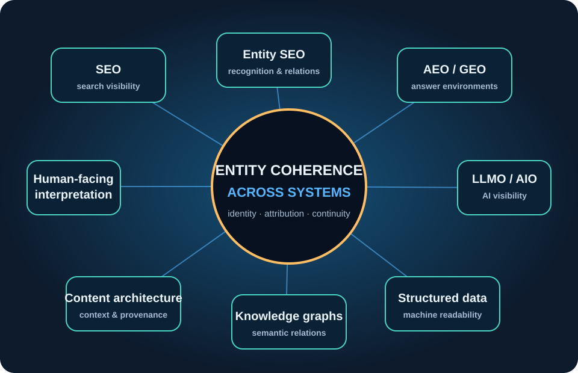

Identity collapse
Name ambiguity, weak distinction, and popularity bias can cause a system to conflate or misidentify entities.
A taxonomic and strategic overview of SEO, AEO, GEO, LLMO, AIO, Entity SEO, and Digital Identity Optimization in AI-mediated environments.

This overview maps practices that are often treated separately. SEO, Entity SEO, AEO, GEO, LLMO, AIO, structured data, knowledge graphs, and content architecture address different parts of digital visibility. The map asks how these practices relate when the persistent object is not only a page or answer, but a distributed entity.
Entities appear through pages, profiles, databases, citations, structured data, platforms, records, and AI-generated responses. Their names, attributes, relationships, authority signals, and temporal states may diverge between these environments.
The question is not only whether an entity is visible, but whether people and systems can consistently identify, understand, distinguish, and reconstruct it across contexts.
Name ambiguity, weak distinction, and popularity bias can cause a system to conflate or misidentify entities.
Distributed records can expose incompatible attributes, incomplete relationships, or disconnected contexts.
Entities change while indexes, datasets, and generated summaries may preserve outdated states.
Unverified, conflicting, or manipulated external context can distort an otherwise stable entity representation and alter the object of an AI-mediated decision.
Digital Identity Optimization is not presented here as the name of the entire field. It is mapped as an author-formulated strategic meta-layer concerned with the coherence of an entity's distributed representation across human-facing interpretation, pre-AI technical representation, and AI-mediated reconstruction.
Search and answer visibility: documents and answers must be discoverable and useful in their respective environments.
Generative and AI-mediated visibility: systems may retrieve, synthesize, attribute, or recommend entities and claims.
Entity recognition and relations: names, attributes, types, and connections become part of the visibility problem.
Digital Identity Optimization is a proposed framework for governing the coherence, recognizability, attribution, and continuity of digital identity across these practices.
The Ontology of Digital Identity: a related theoretical inquiry into how digital identities emerge, persist, change, and are reconstructed.
The map is a secondary analytical presentation derived from an AI-assisted draft in Qwen Studio and editorially revised to distinguish the map itself from the primary DIO/ODI corpus. It does not establish a definitive industry taxonomy; terminology such as AIO is not fully stable and may be used differently across communities.
Identifies overlapping terms and objects of optimization without treating the map as a closed classification.
Relates optimization fragmentation to entity resolution, semantic continuity, provenance, and AI-mediated reconstruction.
Considers DIO as a possible integrating layer, not as an empirically validated technology or finished solution.
The following Zenodo records provide the authoritative archival context for the concepts referenced by this presentation.
Foundational manifesto and multilingual canonical edition. Zenodo DOI: 10.5281/zenodo.21610934.
Conceptual framework developing DIO as a third-generation framework for entity-based visibility. Zenodo DOI: 10.5281/zenodo.21839423.
Critical context for entity reconstruction across sources, time, languages, and AI environments. Zenodo DOI: 10.5281/zenodo.22416026.
Project hub: danielberanek.cz/manifest-dio/
This website is a curated and revised visual overview derived from an AI-assisted analytical draft generated in Qwen Studio. It has been editorially restructured to distinguish primary DIO/ODI sources from secondary interpretation.
It does not claim that DIO or ODI is an empirically validated technology, nor that it provides a ready-made solution to entity resolution, temporal linking, retrieval security, or AI reliability. For the canonical source corpus, citation details, and versioned records, use the Zenodo publications above.